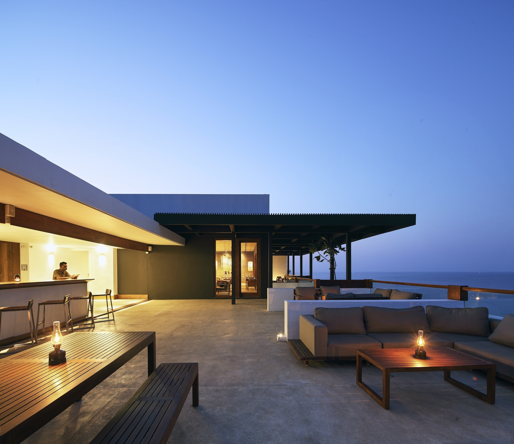
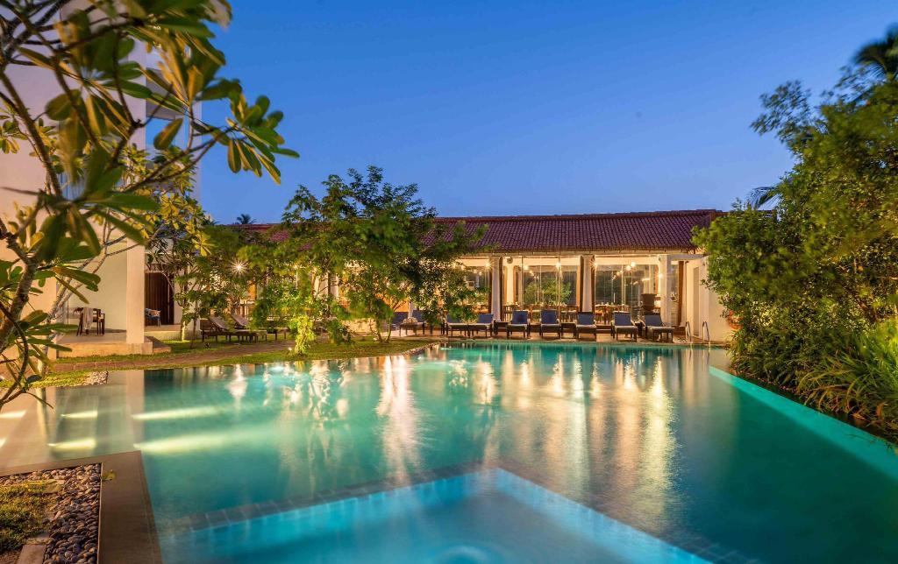

Home Wild life attractions Beaches Activities Heritage locations Hotel details Shop
...Beaches In SriLanka...
. Sri Lanka is a tropical island located in the Indian Ocean's deep blue waters and the Bay of Bengal. The country is blessed with approximately 1,000 kilometers of stunning golden beaches bordered by coconut trees, making it a perfect beach vacation location. A vast number of premium resorts and villas, as well as cheap hotels, are located along the coast to provide guests with some of Sri Lanka's best beach vacations. The beaches are obviously the main draw for visitors and people, but some sites, such as Galle on the south coast, have historical significance, which is an added bonus to a sun and sand vacation.
...1.Unawatuna Beach...
. District: Galle
. Unawatuna, about 5 kilometers from Galle, is a lovely wide curving beach. The beach has been named as one of the top 12 beaches on the planet. The beach is protected by a reef, making it suitable for swimming. Rumasssala, a rocky outcropping protruding into the sea near Unawatuna, is associated with the Ramayana mythology.
...2.Hikkaduwa Beach...
. District: Galle

. Hikkaduwa, on Sri Lanka's southern coast, is known for its underwater delights. Known for its coral gardens, visitors can rent a glass-bottomed boat or goggles and flippers to explore the magical underwater life to their hearts' content. To protect the natural environment, it is recommended that corals not be purchased or sold.
...3.Mirissa Beach...
. District: Matara

. Mirissa, located 4 kilometers southeast of Weligama on the Matara road, is known as one of the country's most beautiful beaches in Sri Lanka's southern coastal area. Its small fishing harbour is separated from its beautiful curve of sandy beaches with calm and clear waters by a headland. Mirissa is a better option for a quieter beach vacation than Unawatuna or Hikkaduwa.
...Nearby Hotels...
Hotel| Image | Location | Contact Number | |
|---|---|---|---|
. Epic Unawatuna . Unawatuna | . 077 925 5914 | | |
. Riff Hikkaduwa|  | . Hikkaduwa | . 0912 274 440 | |
. Triple O Six|  | . Mirissa | . 0417 110 006 | |